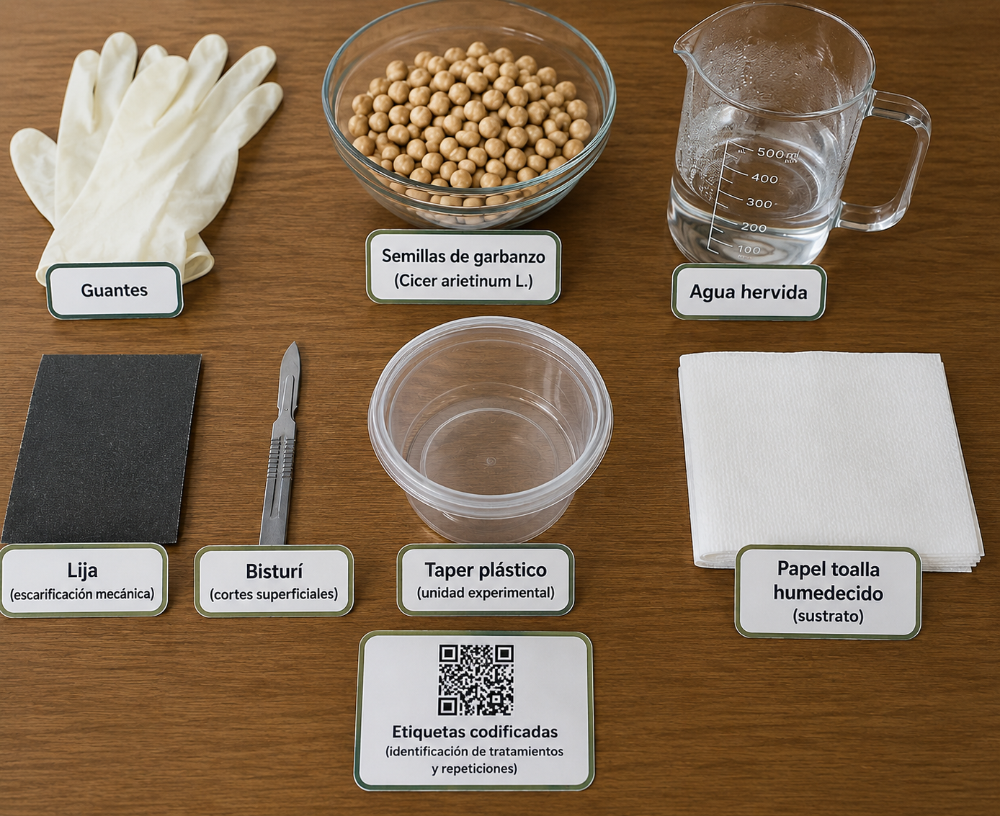
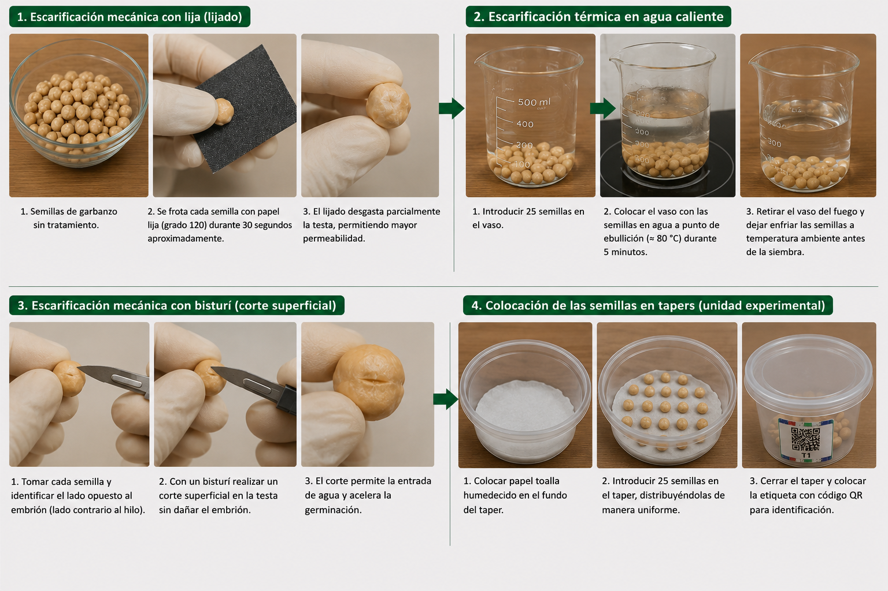

Materiales y Métodos
Se emplearon semillas de garbanzo (Cicer arietinum L.) como material experimental para la evaluación de los métodos de escarificación. Durante la manipulación de las semillas se utilizaron guantes, con la finalidad de mantener condiciones adecuadas de higiene y evitar contaminación que pudiera interferir en el proceso germinativo. La lija fue utilizada para realizar la escarificación mecánica mediante el desgaste parcial de la testa, permitiendo incrementar la permeabilidad de la cubierta seminal y favorecer la absorción de agua. Asimismo, el bisturí se empleó para efectuar cortes superficiales controlados en la cubierta de la semilla, facilitando la imbibición sin comprometer la integridad del embrión. Para el tratamiento térmico se utilizó agua hervida, la cual permitió ablandar parcialmente la testa y acelerar el proceso de hidratación de las semillas. Los tapers plásticos transparentes fueron utilizados como unidades experimentales para mantener las semillas en condiciones adecuadas durante la germinación, además de facilitar la observación diaria de los tratamientos. El papel toalla humedecido se empleó como sustrato debido a su capacidad para conservar la humedad necesaria durante el ensayo. Finalmente, se utilizaron etiquetas codificadas para la identificación y organización de cada tratamiento y repetición experimental.

Imagen 2. Materiales utilizados en el experimento.
Diseño experimental
Se empleó un Diseño Completamente al Azar (DCA) con cuatro tratamientos de escarificación y cuatro repeticiones por tratamiento. La unidad experimental estuvo conformada por 25 semillas de garbanzo por repetición, dando un total de 100 semillas evaluadas por tratamiento (Maguire, 1962). Los tratamientos evaluados fueron: T1 = Escarificación mecánica con bisturí., T2 = Control (sin escarificación), T3 = Escarificación mecánica con papel lija, y T4 = Escarificación térmica con agua hervida # Tratamientos
T1 - Escarificación mecánica con bisturí
se realizó una incisión superficial en la testa de cada semilla utilizando un bisturí, en la zona opuesta al embrión (lado contrario al hilo), con la precaución de no dañar los cotiledones ni el eje embrionario. El corte rompe localmente la impermeabilidad de la cubierta seminal, creando una abertura por la cual el agua puede ingresar y desencadenar el proceso germinativo (Bewley et al., 2013)
T2 - Control
Las semillas no recibieron ningún tratamiento pregerminativo y fueron sembradas directamente, sirviendo como referencia para comparar la eficacia de los métodos de escarificación aplicados.
T3 - Escarificación con papel lija
Se aplicó abrasión manual sobre la superficie de la testa utilizando papel lija grado 120 durante 30 segundos por semilla, mediante movimientos unidireccionales. Este procedimiento reduce el grosor de la capa impermeable de la cubierta seminal sin comprometer la integridad del embrión, permitiendo la posterior imbibición y germinación de la semilla (Kimura & Islam, 2012)
T4 - Escarificación térmica
las semillas fueron sumergidas en agua a punto de ebullición (aproximadamente 80°C) durante 5 minutos. El choque térmico provoca la expansión y ruptura parcial de la testa impermeable, facilitando la entrada de agua hacia el embrión e iniciando los procesos de imbibición necesarios para la germinación. Al concluir el tiempo de exposición, las semillas fueron retiradas y dejadas enfriar a temperatura ambiente antes de la siembra (Kimura & Islam, 2012)
Instalación y registro del experimento de germinación
Concluida la aplicación de cada tratamiento pregerminativo, las semillas fueron colocadas sobre papel toalla húmedo en recipientes de germinación bajo condiciones controladas de temperatura e iluminación. El registro de germinación se realizó de forma diaria, contabilizando como semilla germinada aquella que presentara emisión de radícula visible mayor a 2mm. A partir de los registros diarios se calcularon las siguientes variables fisiológicas: (a) porcentaje de germinación (%), calculado como el número de semillas germinadas sobre el total por unidad experimental; (b) velocidad de germinación (días), expresada como el tiempo medio requerido para alcanzar el 50% de la germinación final; e (c) índice de vigor, calculado mediante la fórmula de Maguire (1962): IV = ∑(ni/ti), donde ni es el número de semillas germinadas en el día ti de evaluación.

Imagen 3. Procedimiento del experimento.